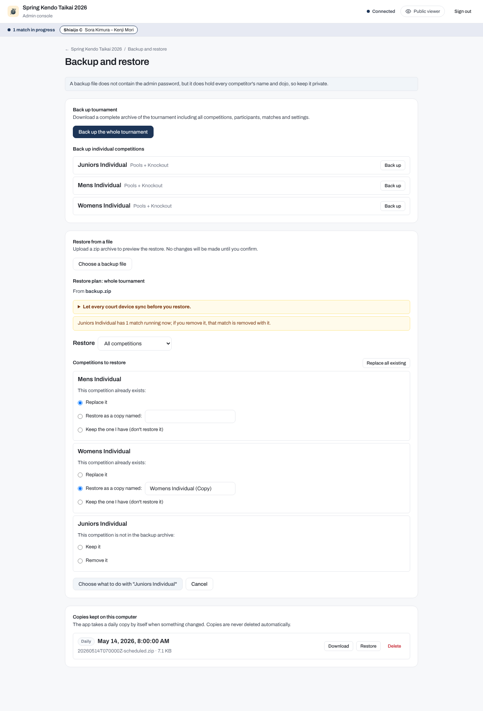
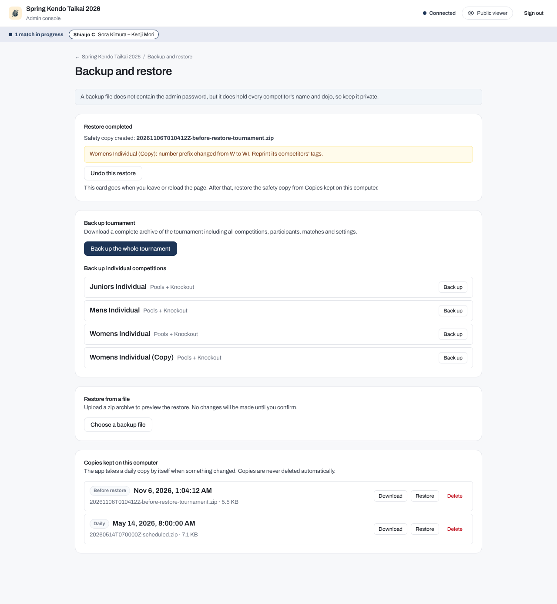

Backup and restore
A backup is a zip archive of the whole tournament or of one competition. Restoring one puts that data back, after a mistake, a failed computer, or an accidental change, and a restore can itself be undone. Taking a backup does not interrupt running matches.
The backup routine
The app saves every change to disk as it happens, but a backup archive is a copy you can carry to another computer or return to after a wrong correction. Take one at these points:
- Before the event begins: take a full backup once your rosters, pools, and brackets are set up.
- After each round completes: take a backup when pool play finishes, and after major knockout rounds.
- Before any risky correction: take a backup before re-opening a completed match, changing a scoreline, or editing pool standings.
You can back up the entire tournament at once, or back up any single competition on its own.
Automatic daily copies
While it runs, the server checks when it starts and then once an hour, and takes a backup of the entire tournament when the newest daily copy is at least 24 hours old (or there is none yet):
- A daily copy is created only if something has changed since the newest daily copy. Backups you download and safety copies do not count. A save that changes nothing, such as the same score sent twice, does not count as a change.
- A copy is also taken when the app is closed normally, if something changed since the newest daily copy. A crash, a pulled plug, or a shutdown that runs past its time limit takes none.
- No daily copy is taken while the tournament has no competitions.
- Daily copies are saved inside the
backups/folder within your tournament data directory. - The app never deletes backup files automatically. Every copy remains on disk until you choose to delete it.
Privacy of backup files
A backup archive does not contain the admin password, so a tournament restore keeps the admin password you already have. In file mode, a whole-tournament restore into a data folder that has no tournament or no admin password yet needs one: on the command line you pass --password.
A backup file does contain every competitor's full name, dojo, match record, and tournament results. Keep your backup files private and do not share them on public channels.
How to create a backup
- In the admin console, click Backup and restore on the dashboard.
- To save the entire event, click Back up the whole tournament. Your browser downloads a zip file containing all competitions, participants, matches, tournament settings, logos, and sponsor images.
- To save a single competition, scroll to Back up individual competitions and click Back up next to that competition. Your browser downloads a zip file containing only that competition.
The file is named after the tournament, then the competition ID for a single competition, then the time in UTC, for example london-cup-mens-individual-20261104T031552Z.zip. Downloading needs no second password. In self-run mode, every action on this page is for organisers only and needs the admin password.
Restoring from a file
You can restore data from a file on your computer, or from one of the copies kept on the server machine:
- Under Restore from a file, click Choose a backup file and pick your backup zip file. Alternatively, scroll down to Copies kept on this computer and click Restore next to any saved copy.
- The app inspects the archive and shows a Restore plan, naming the file it came from. This is a dry run: nothing on disk changes yet.
- Review the plan warnings, including how many recorded results each competition will lose or change, and make your choices for each competition.
- Click Restore. To leave the plan without restoring anything, click Cancel beside it.
- The app checks your choices once more, so a name that is already used is shown on its competition before you are asked for the password. The confirmation dialog then sums up what the restore will do, for example
This restore replaces 5 competitions, adds 1 copy and leaves out 1 competition. 42 recorded results will be lost or changed.Enter the admin password to proceed.
An uploaded file can be at most 64 MB. A downloaded file larger than that restores from the command line; a daily or safety copy of any size restores from Copies kept on this computer.

Restoring one competition from a tournament backup
If you have a whole-tournament backup file but only want to restore one competition from it, you do not need to restore everything else.
Above the competitions in the restore plan, the Restore list starts at All competitions. Pick Only and a competition's name to run the preview again for that single competition. The other competitions in your data folder and your tournament-wide settings are left as they are. Pick All competitions to go back to the whole tournament. Changing the list clears the choices you made in the plan. The list appears when the backup holds two or more competitions.
The choices you must make
When restoring, the plan presents you with decisions depending on what is currently in your data folder:
- For a competition that already exists in the folder: the plan lists it under its name in the backup. If you renamed it after the backup was made, a line below gives the name it has now: Replace it brings back the backup's name, and Keep the one I have keeps the new one. The command line shows the same, for example
("Men up to 2D", called "Men Kyu to 2D" now).- Replace it: overwrites the current competition with the one from the backup.
- Restore as a copy named: keeps your current competition intact and restores the backup copy under a new name. You must type a name for the new copy in the box.
- Keep the one I have (don't restore it): leaves your current competition exactly as it is, and the backup's version of it is not restored. Offered when restoring a whole tournament.
- For a competition that is only in the backup file (when restoring a whole tournament): it is added as a new competition, with no question asked. Tick Don't add it to leave it out; the competition is then not created.
- For a competition that exists in the folder but is missing from the backup file (when restoring a whole tournament):
- Keep it: leaves the competition in your tournament folder as it is.
- Remove it: deletes the competition from your tournament folder.
When you restore Only one competition, or a competition backup, there is no choice to keep your current competition or to leave the competition out: that would restore nothing, so click Cancel under the plan instead. A competition you keep, or do not add, keeps its own name and number prefix, so the name and prefix checks below treat it as staying in place.
Nothing is preselected. Replace all existing answers Replace it for every competition that already exists; you can still change any of them. Until you make a choice for every competition that requires one, the button stays disabled and names the next open choice, for example Choose what to do with "Mens Individual" or Enter name for copy of "Mens Individual". Tapping it takes you to that choice.
As you choose and type, the app checks your choices against the data folder. A name for a copy that is already used shows That name is already used. under its box, and the button reads, for example, Pick another name for the copy of "Mens Individual". A competition from the backup whose name another competition staying in place already has shows Another competition already has this name., and the button names it until you choose something else for it, such as a copy with a new name.
What is restored and what is not
When you restore a backup:
- What comes back: Competitor lists, pools, brackets, recorded scores, decisions, match histories, lineups, team members, and overrides. A whole-tournament restore also brings back the tournament settings, logos, and sponsor images. A competition backup, or a restore of Only one competition, leaves the tournament settings as they are.
- Announcements are not restored: Announcements live only in temporary server memory and expire on their own. They are never saved in backup files.
- Offline court devices: Let every court device sync before you restore. If a court table device recorded scores while offline and reconnects after a restore:
- If the device's recorded change is newer than the restored match record, the server applies the change. An older change is kept in the match's history instead.
- If the restored record already has that match marked as finished, the late change is preserved in the match's audit history instead of altering the result.
- If the restored tournament no longer holds that match (for example, if the competition was removed or was not yet drawn in the backup), the late change is refused.
- Tournament mode change warning: If a tournament restore changes the operating mode (for example, from officiated mode to self-run mode), the plan displays a warning because the mode changes what the public page can do, such as whether anyone can enter scores.
- Missing shiaijo warning: If a competition, restored or staying in place, uses a shiaijo that the restored tournament settings do not have, the plan warns you. Its matches there cannot be called until you add the shiaijo back in the tournament settings or move those matches to another shiaijo.
- Matches that were running in the backup: No match comes back running. A match the backup holds as running comes back in the queue with its score, as if you had sent it back to the queue, and the plan lists how many for each competition before you choose. Start it again from the court when its shiaijo is free. If the app cannot finish this step, or the number prefix check below, the restore card says so: restart the app and it finishes them as it starts.
- Number prefix collisions: If a restored competition uses a competitor number prefix that a competition staying in place, or another competition in the same restore, already uses, the app assigns a new prefix automatically. A warning tells you to reprint tags for that competition.
- Running matches: If a competition you could replace or remove has matches in progress on court, the plan warns you before you choose, and names the choice that would replace or remove them. The page lets the restore go ahead, and the restore replaces those matches with the backup's version. On the command line, the same restore is refused unless you pass
--allow-running. - Do not upload images during a restore: Do not upload tournament logos or sponsor images while a restore is running. Branding and sponsor folders are swapped as part of the restore process, so an upload in progress could fail or be overwritten.
When a restore is refused
A refused restore changes nothing. The page tells you why, and the common reasons are:
- That name is already used: the name you typed for a copy is taken. The plan normally shows this before you are asked for the password; the restore still refuses it if another competition took the name in the meantime. Pick another name.
- Another competition already has that name: a competition from the backup has the same name as one that stays in place. The plan shows this on the competition before you are asked for the password, and the restore refuses it if it still holds. Rename one of them, restore it as a copy with a new name, or keep the one you have.
- Matches are running: after the plan was made, a match started in a competition the restore replaces or removes. The plan is checked again; click Restore again to go ahead.
- The competitions changed since the restore was checked: someone added or removed a competition after the plan was made. Check the plan again, then restore.
- A competition folder in the app has no settings file: that competition cannot be copied before the restore replaces or removes it. Keep it, or restore the backup's competition as a copy.
- A competition has a write that could not be finished: restart the app, then try again.
- The backup file could not be read from the upload: the upload failed. Choose the file again.
- The backup file is over 64 MB: the page cannot take an upload that large. Restore it from the command line, or, for a daily or safety copy, from Copies kept on this computer.
- A file in the backup cannot be read: the backup is damaged. Try another copy.
If the page says The restore could not be completed, something failed partway through. Restart the app: it finishes a restore that was under way as it starts. - That backup is not there any more: the kept copy was deleted, for example from another browser tab. Reload the list. - Wrong password. Nothing was restored.: the password typed in the confirmation dialog was wrong. Type it again. - The file is not a backup this app can restore: the file is damaged, was changed after it was made, or is not a backup archive.
Safety copies and undoing a restore
Before a restore changes anything, the app takes a safety copy of the data that is about to change. This safety copy is saved in the backups/ folder with a filename that contains before-restore, for example 20261104T031552Z-before-restore-tournament.zip.
When the restore completes, the page displays a confirmation card with an Undo this restore button:

Clicking Undo this restore shows the undo's plan, with a line on each competition saying what the undo does with it, and prompts for the admin password. The dialog sums up the undo, and confirming it puts back the data from the safety copy:
- Competitions that were replaced return to their pre-restore state.
- Competitions that were removed are brought back.
- Competitions that were created or restored as copies are removed.
- Competitions that were kept remain untouched, including a competition you kept instead of restoring it. A competition you chose not to add was never created, so the undo has nothing to do with it.
- Matches that were running when the safety copy was taken come back in the queue with their score, as after any restore.
- After a tournament restore, the tournament settings, logos, and sponsor images return as well.
The card, and its button, last until you leave or reload the page. After that, click Restore on the before-restore copy in the list instead, which asks the usual choices.
An undo is itself a restore, so the app takes a new safety copy before undoing. The card then reads Restore undone, names that new copy, and offers no second undo. To reverse an undo, restore that new safety copy from Copies kept on this computer.
Copies kept on this computer
The Copies kept on this computer section lists the backup archives the app saved inside the data directory's backups/ folder:
- Daily: automatic copies, taken once a day when the data changed, and when the app is closed normally after a change.
- Before restore: safety copies taken immediately before a restore operation.
A file you copy into backups/ yourself, such as a downloaded backup, is not listed: the list shows only files with the app's own names. Restore such a file with Restore from a file.
Each copy shows its kind and the local time it was taken first, then its file name and size, and provides three actions:
- Download: downloads the backup zip file to your local computer.
- Restore: opens the file in the restore planner to review choices and restore.
- Delete: prompts for the admin password and permanently removes the backup file from the server disk.
Using the command line when the server is stopped
If the app will not start, or you need to restore data onto a new computer before starting the app there, use the command line.
Always stop the mobile-app server before running command-line backup or restore commands. The command-line tool reads and writes the tournament files directly on disk and cannot coordinate with a running server. If a competition has a write that could not be finished, the command refuses: start the app once so it replays its pending writes, stop it, then run the command again.
Command-line backup
To back up an entire tournament folder:
To back up a single competition by its ID:
bracket-creator mobile-app backup --folder ./tournament-data --competition mens-individual --out ./mens.zip
Command-line restore
To restore a tournament archive, specify your choices for every competition that requires one:
bracket-creator mobile-app restore ./backup-2026.zip \
--folder ./tournament-data \
--replace mens-individual \
--copy juniors-individual="Juniors Individual (Copy)" \
--keep open-championship
In a whole-tournament restore, --keep ID leaves the folder as it is for that competition: one you already have is not replaced, and one only the backup holds is not added (without the flag, a competition only the backup holds is added). The command prints Kept: and Left out: lines for them. With --only, --keep is not a choice.
Add --only ID to restore one competition from a tournament archive, --remove ID to remove a competition that the backup does not hold, and --undo with a before-restore file to undo a restore. The mobile-app command reference lists every flag.
Into a folder with no tournament yet, only a whole-tournament archive can be restored, and you must pass --password to set the admin password, unless you pass --lock-password because you will start the server in locked mode.
If you run mobile-app restore without specifying decisions for competitions that require them, the command does not make any changes. Instead, it prints the required choices so you can re-run with the appropriate --replace, --copy, --keep, or --remove flags, for example mens-individual ("Mens Individual"): choose replace, copy or keep.